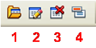
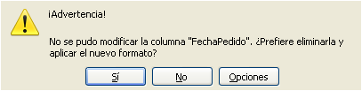
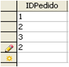

Tecnología de la Información y la Comunicación: Bases de datos
3.3. Edición de tablas y registros
Ya hemos creado la tabla, ¿y ahora qué?
La siguiente operación es introducir los datos, para lo cual es necesario abrir el objeto y comenzar a teclear.
Pero OOo Base permite acceder a la vista de diseño en cualquier momento y modificar la estructura de la tabla.
Importante
Editar una tabla consiste modificar su estructura añadiendo o modificando los campos o sus propiedades.
Editar un registro consiste en modificar los datos contenidos en sus campos.
Comprueba lo aprendido
Las operaciones relacionadas con una tabla se abren en la barra de herramientas de tabla o haciendo clic en el botón derecho del ratón. Relaciona cada icono con la vista que abre y su función.

Barra de herramientas de tabla.
La edición de tablas ofrece la posibilidad de añadir campos nuevos a la tabla o de modificar las propiedades de los campos ya creados. La primera operación sigue un proceso idéntico al de creación de la tabla. Sin embargo, la modificación de los campos debe cumplir unas normas:
|

|
| Error tipo de datos |
Caso práctico
|
Abre la tabla Pedidos e introduce un nuevo registro en el identificador del pedido que sea un valor repetido, por ejemplo un 2.
¿Qué mensaje lanza el programa? ¿Por qué lo hace? |

Campo IDPedido |
Para saber más
Para ampliar tus destrezas con el gestor de bases de datos, trata de introducir valores distintos en campos de tipo fecha y valores de texto en un campo de tipo numérico.
¿Qué ocurre?